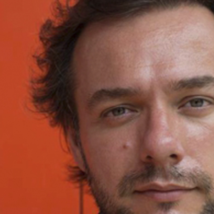

EVENTS
| FECHA | ARTISTA | LUGAR |
|---|---|---|
| 18/5/2017 | Alejandro Xul Solar | Museo Nacional de Bellas Artes |
| 25/6/2017 | Gabriel Chaile | Museo de Arte Moderno de Buenos Aires |
| 28/6/2017 | Tomás Zaraseno | Museo de Arte Moderno de Buenos Aires |
| 5/8/2017 | Lucio Fontana | Museo Nacional de Bellas Artes |
| 15/9/2017 | Aldo Cessa | CCK |
Eugene Golovanchuck

My full name is Eugene Golovanchuk and I am a Art Director, Digital and Concept Artist located in Ukraine. My life is full of Digital Experiments - combinening different tools, shapes and colors to achive interesting results.
Laurence Gartel

Laurence Gartel utilizaba el ordenador personal Commodore-Amiga como una herramienta con la que explorar nuevas posibilidades estéticas. Se sumergió con curiosidad y sin reservas en el software gráfico disponible en aquel momento y creó con el ordenador, mediante la manipulación de sus propias fotografías, divertidos collages”
Bijou Karman

I'm an artist and illustrator from Los Angeles. I graduated with Distinction from Art Center College of Design in Pasadena, CA. My clients include: Converse, Cinespia, ELLE, Harper's Bazaar, InStyle, Knit Wit, LA Record, Le Kilt, Little White Lies, Refinery29, Rihanna, Stance Socks, and The Los Angeles Times.
Nacho Ormaechea
Es un artista conceptual que busca inspiración en las calles parisinas y en los transeúntes anónimos que divagan por la ciudad. Con su serie artística Street Memories, conjuga la fotografía costumbrista con la técnica del collage y consigue de este modo un resultado de contrastes y gran fuerza visual.
Lara Zankoul

Unicamente mediante el uso de su cámara y sin manipulación digital, Zankoul crea imágenes oníricas en las que utiliza el agua para describir las características contrapuestas de los personajes que retrata.
Mike Winkelmann

Beeple is Mike Winkelmann, a graphic designer from Appleton, Wisconsin, USA. His short films have screened at onedotzero, Prix Ars Electronica, the Sydney Biennale, Ann Arbor Film Festival and many others. He has also released a series of Creative Commons live visuals that have been used by electronic acts such as deadmau5, Taio Cruz, Tiësto, Amon Tobin, Wolfgang Gartner, Flying Lotus and many others. He currently releases work on Flying Lotus' Brainfeeder imprint.
Daniel Garay Arango

Street, architecture and landscape phoyography. Currently based in Bogotá, Colombia.
Markos Kay

Is a visual artist, creative director, illustrator and lecturer based in London. MRK's work fuses science with visual art. He deals with themes of emergence, evolution and complexity, as well as artificial life and generative art.
© 2017 Digital Art Gallery - Web I, Tecnicatura Universitaria en Desarrollo de Aplicaciones Informáticas
Por Gaspar Lara y Agustín Pietrocola